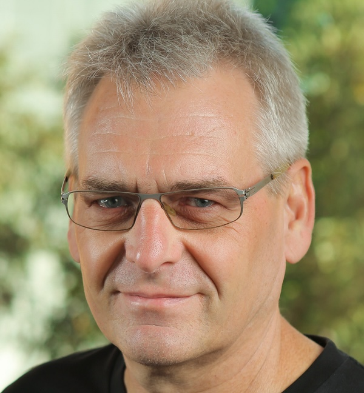
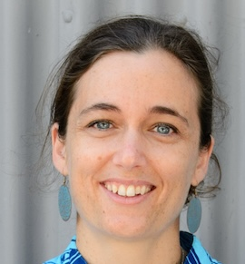

Members
The Governing Board of the seL4 Foundation consists of: the Founders of the seL4 technology (June Andronick, Gerwin Klein and Gernot Heiser); a representative appointed by each Premium Member; a representative elected by General Members; the Chair of the Technical Steering Committee.
Their role is described in detail in the seL4 Foundation Fund Charter.
-

Gernot Heiser (Chair)
Technology Evangelist, Trustworthy Systems
Gernot is the Founder of the Trustworthy Systems Research Group (TS), which created seL4. He is Scientia Professor and John Lions Chair of Operating Systems at UNSW Sydney, where he has been teaching operating systems and leading research on L4 microkernels for more than 25 years. Besides that, his focus is on transferring TS technology to the real world. He was the founder and CTO of Open Kernel Labs and is presently serving as Chief Scientist (Software) at HENSOLDT Cyber. Gernot holds a PhD from ETH Zurich and is a Fellow of the ACM, the IEEE and the Australian Academy of Technology and Engineering (ATSE). Jointly with June and Gerwin he won the ACM SIGOPS Hall-of-Fame award in 2019.
-

June Andronick (CEO and Treasurer)
CEO, Proofcraft
June is a former leader of the TS group and was a core contributor to seL4's verification story, as well as verification work on the eChronos RTOS. She holds a PhD from Paris-Saclay University. In 2011 she was recognised by MIT Tech Review as a Top Innovator under 35. She is a conjoint professor at UNSW Sydney.
-

David Hardin
Associate Director, Raytheon Technologies
Dr. David Hardin is an Associate Director, Systems Engineering at Collins Aerospace. Dr. Hardin has significant experience in the design and verification of high-assurance hardware, software, and systems, and is editor of the book Design and Verification of Microprocessor Systems for High-Assurance Applications.
-

Feng Zhou
Fellow, Horizon Robotics
Dr. Feng Zhou has 15 years of academic experience (Professor and Vice Chairman of Dept. of Information and Electronics Engineering in Zhejiang University, China) and over 15 years of industrial experience in video/image compression & processing, computer vision, artificial intelligence, and ASIC processor architecture. Dr. Feng Zhou experience extends to the FPGA/ASIC system architecture design and deep learning algorithm implementation based on FPGA/ASIC platforms.
-

Gerwin Klein
Chief Scientist, Proofcraft
Gerwin lead the verification of seL4. He spends much of his time deep in the proofs about seL4 and contributes to other verification research in TS. He holds a PhD from TU Munich and led the original seL4 verification, which won the MIT-TR10 award for the top 10 emerging technologies in 2011, as well as the SIGOPS Hall-of-Fame award in 2019. He is a conjoint professor at UNSW Sydney.
-

Dr Matthew P. Grosvenor
Software Engineer, Jump Trading
Matthew is the representative of Premium Member Jump Trading, where he specializes on measurement and optimization of high-performance and low-latency network systems. He holds a doctorate in computer science from the University of Cambridge where his research work focused on techniques for managing and mitigating latency variance in hyper-scale datacenter networks. He is also a former member of the Trustworthy Systems research group. For his honors project, Matt worked on capability allocation/deallocation techniques using the seL4 capability system. Matthew maintains a strong interest in facilitating and performing research, particularly in the areas of high-performance, and high-assurance systems.
-

Qiyan Wang
VP Engineering, Digital Systems of NIO
Qiyan is the representative of Premium Member NIO, where he leads a global R&D team responsible for Vehicle Operating System, Connected Vehicle Cloud, Vehicle Digital Architecture, Cyber Security, and Vehicle Software Integration and Validation. Prior to NIO, he worked as Principal Scientist at Symantec and Exabeam. He received his PhD in Computer Science from the University of Illinois at Urbana-Champaign with research focus on Distributed Systems and Cyber Security.